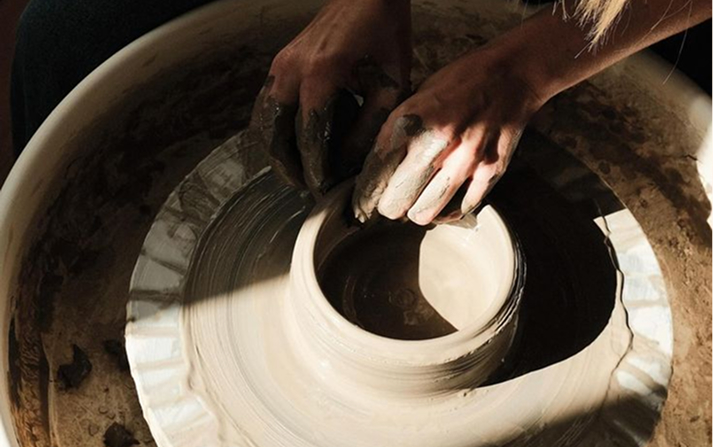
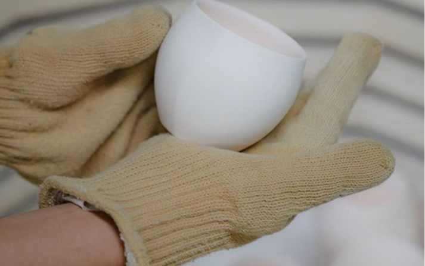
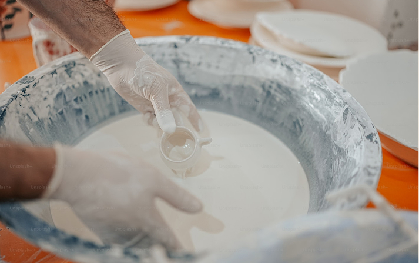
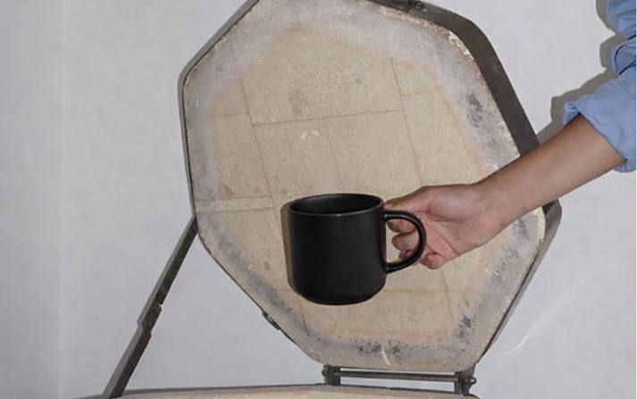
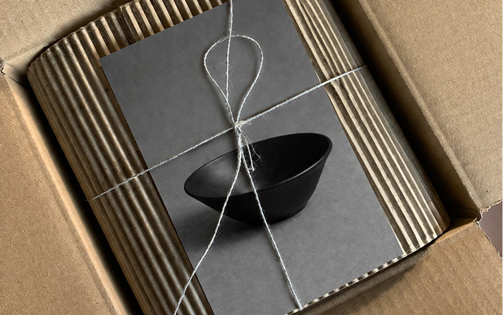

유럽산 화이트 스톤웨어는 안정적인 강도와 균일한 물성을 바탕으로, 형태의 완성도와 내구성을 동시에 확보할 수 있는 점토입니다. 은은한 색감과 미세한 텍스처를 자연스럽게 드러내며, LOAMO가 지향하는 차분한 분위기와 균형을 가장 잘 표현합니다.
Crafted with European white stoneware, known for its strength and consistency, each piece achieves a refined form with lasting durability. Its soft, muted tone and delicate texture quietly reflect the calm and balanced sensibility of LOAMO.

Made By Hand
물레 위에서 형태를 잡거나, 손으로 직접 빚어 형태를 만듭니다. 완벽하게 동일한 형태가 아닌, 미세한 차이를 가진 형태를 지향합니다. 손의 움직임이 그대로 형태로 남습니다.
Each piece is formed on the wheel or shaped by hand. Instead of identical results, we value the quiet differences that make every form unique. The gesture of the hand is preserved, gently reflected in the final shape.

First Firing
가마에서 초벌을 진행합니다. 이는 두 번의 소성 중 첫 번째이며, 높은 온도 속에서 흙은 단단해지고, 형태가 고정됩니다. 불은 형태를 완성하는 첫 번째 과정입니다.
The piece undergoes its first firing in the kiln. As the beginning of a two-stage process, the clay is strengthened by heat and the form is set into place. Fire marks the first step in bringing the form to completion.

Signature Glazing
첫 번째 소성 후 완전히 고체형태가 되어 유약을 칠할 준비가 됩니다. 제품의 표면에 로아모만의 시그니처 유약을 입혀 색감과 질감을 더합니다. 유약의 흐름과 농도에 따라 각각 다른 표정이 만들어집니다.
After the first firing, the piece becomes fully solid and ready for glazing. LOAMO’s signature glaze is applied to enrich both color and texture. Depending on its flow and density, each piece reveals a slightly different expression.

Final Firing
다시 한 번 가마에 넣어 재벌을 진행합니다. 1240도의 고온의 시간 속에서 유약과 형태가 하나로 완성됩니다.
The piece is returned to the kiln for a second firing. At 1240°C, the glaze and form fuse together, completing the piece.

Packaging
완성된 제품은 정성스럽게 포장됩니다. 형태와 두께를 고려해 개별 보호되며, 단순한 보호를 넘어 마지막 경험까지 이어집니다. 친환경적이고 미니멀한 패키징으로 인상을 남깁니다.
Each piece is carefully packaged with attention and care. Individually protected based on its shape and thickness, it goes beyond simple protection to become part of the final experience. Finished with eco-friendly, minimal packaging that leaves a lasting impression.